Pečky · Středočeský kraj · okres Kolín
Radnice, kterou lze přečíst
Web je sestavovaný a průběžně aktualizovaný poloautomaticky s pomocí AI — všechny uvedené informace jsou ale ověřené a čerpají výhradně z veřejně dostupných zdrojů. Kompletní přehled zdrojů a odkazy najdeš v sekci O webu.
Jak se řídí město
Lidé, kteří řídí město
Město řídí dvě propojené skupiny. Zastupitelstvo je 21členný sbor, který si občané volí přímo v komunálních volbách jednou za čtyři roky — má poslední slovo v zásadních otázkách jako rozpočet nebo majetek města. Zastupitelstvo si pak ze svého středu zvolí radu, menší výkonný tým, který řídí každodenní chod úřadu mezi jednotlivými zasedáními. Níž se dozvíš, kdo v nich sedí a o čem přesně rozhodují.
Rada města (7)
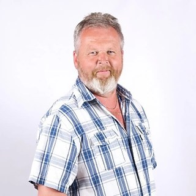
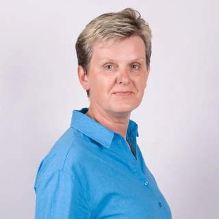
Ostatní členové zastupitelstva (14)
Bez funkce v radě — rozložení mandátů níže na této stránce, výsledky voleb v sekci Volby.
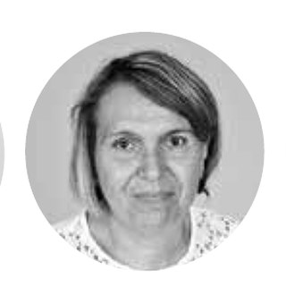
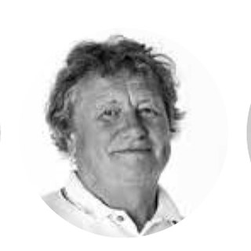
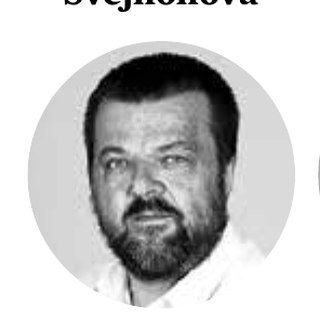
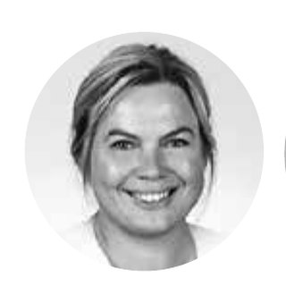
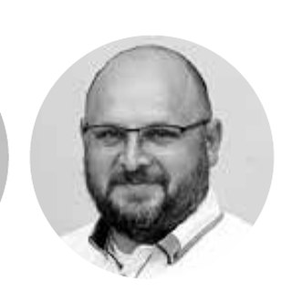
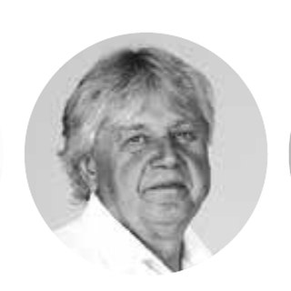
Rozvoj města · 2016–2026
Mají Pečky nějaký plán?
Každé město by mělo mít jasnou představu o tom, jak by mělo v budoucnu vypadat a čím by mělo vynikat. I Pečky mají takovou vizi — dokument, který určuje směr, priority a rozvoj obce na několik let dopředu. Ten poslední se jmenuje Strategický plán rozvoje města Pečky 2016–2026. ověřeno
ve čtyřech prioritních oblastech
rozpočítáno na roky 2016–2026
právě letos končí
viz zjištění níže
Konkrétní projekty v plánu
- Obchvat města — ve spolupráci se Středočeským krajem
- Rekonstrukce náměstí (kašna, socha T. G. Masaryka, prostor pro akce) a revitalizace parku pod Vodárnou
- Rekonstrukce Kulturního střediska
- Nová školní tělocvična a rekonstrukce stávající
- Síť cyklostezek do okolních obcí — Velké Chvalovice, Ratenice, Radim, Tatce, Dobřichov
- Odbahnění Benešáku a Mlýnského náhonu
- Veřejné WC ve městě
- Sociální pracovník na městském úřadě
- Denní stacionář v Domě s pečovatelskou službou
- Workoutové hřiště, parkour a skatepark
Jak se plán plní?
Samotný dokument odpověď nedá — kolonka plnění zůstala po roce 2017 prázdná. Zkusili jsme proto položky plánu spárovat s tím, co je o městě skutečně doložitelné: s archivem jednání rady a zastupitelstva, s přijatými dotacemi, smlouvami a s Pečeckými novinami. Níže jsou projekty, u kterých se podařilo dohledat konkrétní stopu. ověřeno
| Projekt (položka plánu) | Co se skutečně stalo | Stav |
|---|---|---|
| Revitalizace rybníka Benešák Z.2.1.4 · termín 2019 |
Dotace z Operačního programu Životní prostředí (MŽP) 3 146 174 Kč v roce 2019, navazující revitalizace bývalého lesíka u rybníka 935 336 Kč (2020). Hotovo potvrzují i Pečecké noviny. Později přibylo solární osvětlení (2025), chystá se workoutový park u Benešáku. | splněno v termínu |
| Rekonstrukce fotbalových kabin AFK L.3.3.3 · termín 2021 |
2021 zastupitelstvo uvolnilo 1,3 mil. Kč na projekt s podmínkou dotace min. 70 %. 2022 žádost k Národní sportovní agentuře, dotace 4 753 860 Kč (2023), poté výběrové řízení, stavba 2024 — s prodlevami, zhotovitel po termínu. Noviny 2/2025: „hlavní událostí roku 2024“. Navázala rekonstrukce tribuny (2025). | splněno se zpožděním |
| Sociální pracovník na úřadě L.2.1.4 |
Pracovní pozice vypsána 2023, výběrová komise 12/2023. Provoz podpořen dotacemi MPSV (146 tis. Kč v 2024, 303 tis. Kč v 2025). | splněno |
| Denní stacionář v DPS L.2.1.1 |
Doložen provoz — finanční dary na stacionář 2022–2024, opakované dotace pro Pečovatelskou službu. | splněno |
| Nová tělocvična a učebny ZŠ L.4.3.2 a L.4.3.3 · termín 2026 |
42 usnesení od 4/2021: projektová dokumentace (Atelier 99), interiéry, elektroinstalace. Stavba běží — od 6/2026 kvůli ní uzavírka ulice K. H. Borovského. | probíhá |
| Severní obchvat I.1.2.7 · termín 2020 |
11 usnesení 2021–2025: smlouva o spolupráci se Středočeským krajem (2021), výkupy pozemků (2022), přeložky plynovodu (2023, 2024), převzetí staré silnice II/329 (11/2025). Šest let po plánovaném termínu nestojí. | v přípravě |
| Odbahnění Mlýnského náhonu Z.2.1.3 · 5,4 mil. Kč |
Dodatek k projektové dokumentaci (2022) a odkup podílu na pozemku (2023). Realizace v datech doložena není. | zatím jen projekt |
| Veřejné WC a úschovna kol u nádraží I.2.2.14 a I.2.2.9 |
Společná projektová dokumentace „Veřejné WC a kryté stání na kola u nádraží“, dodatek 10/2022, věcné břemeno 2023. Dál se projekt v datech neposunul. | zatím jen projekt |
Obchvat města — proč se na něj čeká už přes 25 let
Obchvat má dvě poloviny. Jižní část je hotová a v provozu už přes dvacet let. Severní část, která by okruh kolem Peček konečně uzavřela, se objevuje už v původním územním plánu města z 90. let — ale pořád stojí jen na papíře. Zdaleka to tedy není projekt „od roku 2000“, jak by se mohlo zdát z toho, kdy byla dokončena první polovina. ověřeno
| Kdy | Co se stalo |
|---|---|
| před 1998 | Okresní úřad Kolín schvaluje původní územní plán Peček, který už počítá s přeložkou silnice II/329 po západní straně města jako obchvatem — v souvislosti se záměrem zrušit úrovňový železniční přejezd v centru při modernizaci trati Praha–Kolín–Břeclav. Odtud pochází celá myšlenka obchvatu, včetně severní části. |
| ~2000 | Dokončena a zprovozněna jižní část obchvatu (v provozu podle dobového tisku již 18 let k roku 2018). |
| 2007 | Město postaví cyklostezku Pečky–Velké Chvalovice v jiném místě, než se původně počítalo — kraj to později uvádí jako jednu z komplikací křížení s trasou severní části. |
| 2017 | Starosta Milan Urban pro Kolínský deník: „O obchvatu severní části se hovoří od dokončení obchvatu jižní části.“ Projektová dokumentace je léta hotová, brzdí ji hlavně nevykoupené pozemky; město musí jednání se Středočeským krajem znovu otevřít. |
| 17. 2. 2021 | Středočeský kraj podepisuje smlouvu na aktualizaci projektové dokumentace (5,19 mil. Kč) s konsorciem Ateliér projektování inženýrských staveb, Pragoprojekt a Pontex. |
| 20. 10. 2021 | Zastupitelstvo schvaluje smlouvu o spolupráci veřejných zadavatelů (město + kraj) na akci „II/329 Pečky, severní obchvat“. |
| 10. 1. 2022 | Rada schvaluje strategii výkupu pozemků pod severní částí obchvatu. |
| 9.–25. 5. 2022 | Na radu a zastupitelstvo se dostává žádost „Spolku občanů města Pečky pro změnu obchvatu“ o změnu projektové dokumentace — místní iniciativa žádá úpravu trasy. |
| 9.–21. 9. 2022 | Rada a zastupitelstvo postupně uzavírají několik smluv o smlouvě budoucí kupní s vlastníky pozemků pod plánovanou trasou. |
| 2023 | Rada schvaluje dvě směny pozemků potřebných pro trasu obchvatu (5/2023 a 7/2023). |
| 15. 5. 2024 | Krajský úřad Středočeského kraje formálně zahajuje územní řízení pro stavbu „Pečky, severní obchvat“. |
| 15. 7. 2024 | Rada schvaluje smlouvu o budoucím věcném břemenu na přeložku plynovodu, kterou si stavba obchvatu vyžádá. |
| 13. 10.–12. 11. 2025 | Rada a zastupitelstvo předjednávají budoucí bezúplatné převzetí staré silnice II/329 městem a její vyřazení ze silniční sítě — usnesení ale výslovně říká, že k vyřazení dojde „nejdříve po realizaci obchvatové komunikace“, tedy stavba k tomuto datu ještě nestála. |
Komunální volby 5.–6. 10. 2018
Volby 2018 do zastupitelstva
Předminulé komunální volby v Pečkách proběhly 5.–6. října 2018, účast byla 48,81 %. Kandidovalo šest uskupení, pět z nich získalo mandát. Výsledky ještě před ustavujícím zasedáním napadl u soudu jeden občan — zastupitelstvo se kvůli tomu sešlo až o měsíc později, než je obvyklé. Níže jsou všechna uskupení s výsledky a shrnutím jejich volebního programu. ověřeno
Volební uskupení
Voleb 2018 se v Pečkách účastnilo šest uskupení. Konkrétní výsledky jsou v záložce Výsledky voleb, předvolební programy v záložce Předvolební sliby.
| Uskupení | Lidé | Sociální sítě |
|---|---|---|
| SNK NAŠE PEČKY | AŠIMTVJHŠHVJOSVSTDBKJKJDLHMVDNVLJJDKGCASFP |
|
| Sdružení ODS a nezávislých kandidátů | MPMHKKPZZFHKITVKIHMVMRLSPKJHJLMŠPKHPKHJHŠR |
— |
| Komunistická strana Čech a Moravy | LVMMJMSJLDSPMHJMJSVZVMMBFHFSJPJZDFENJCSBJD |
— |
| PEČKY PEČÁKŮM | MJMPMHJŽŠJPSRPAHPŠJKFDTJJŠVKLJPHMŠKVDŘTCVH |
— |
| Česká strana sociálně demokratická | PDJKIVLKLKJDPSMMVDIPRVMBZPRSVHVHJTVMPJMVJH |
— |
| LIDOVCI A NEZÁVISLÍ | ZKPZEMJVJBPKMHJHVWJMJNZEAMACMVMFMŠACLLMC |
— |
Kompletní kandidátní listiny (20–21 kandidátů na uskupení) podle ČSÚ / novinky.cz — u jmen je zobrazen barevný avatar s iniciálami, plné jméno se zobrazí po najetí myší. Dobové fotografie kandidátů (NAŠE PEČKY a ODS zveřejnily portréty celé kandidátky ve volební inzerci Pečeckých novin 9/2018) zatím nejsou převedené do jednotného formátu profilových fotek — na rozdíl od záložky Volby 2022 zde proto nejsou.
Volební programy - aneb co kdo sliboval
Shrnutí volebních programů z inzertních stran Pečeckých novin 9/2018 (vydání těsně před volbami). Všech šest uskupení si v tomto čísle zaplatilo inzerci. Plné znění viz odkaz u každého uskupení.
Sedmibodový plán prezentovaný jako konkrétní kroky, ne obecné sliby:
- Zajistíme transparentní radnici. Veškeré informace budou zveřejňovány včas. Vše bude dostupné na webu, facebooku, vývěsce i v novinách.
- Vybudujeme obchvat Sever. Zbavíme město kamionové dopravy. Vrátíme život na náměstí.
- Budeme podporovat sportovní a kulturní akce. Zefektivníme činnost sportovní a kulturní komise. Zavedeme pravidla pro podporu oddílů a akcí v Pečkách a Velkých Chvalovicích.
- Podpoříme vzdělávání i podnikání v Pečkách a Velkých Chvalovicích. Podpoříme rozvoj výuky ve školách a nové vzdělávací programy pro občany. Připravíme strategii města pro rozvoj podnikání a zaměstnanosti.
- Zvýšíme bezpečnost ve městě. Využijeme veškeré dostupné možnosti ke zlepšení situace v Pečkách.
- Rozšíříme dostupnou lékařskou péči. Vytvoříme město přátelské seniorům.
- Zlepšíme životní prostředí v Pečkách a Velkých Chvalovicích. Rozšíříme a zachováme zeleň, obnovíme zeleň v parku, zpřístupníme nevyužívané zelené plochy.
„Jsme skupina lidí, kterým na Pečkách a Velkých Chvalovicích záleží. Nejsme spojeni s žádnou politickou stranou“ — inzerce dále odkazuje na nasepecky.cz a facebook.com/nasepecky.
„Žádné všeobecné sliby, ale konkrétní kroky a akce“:
Školství
- Výstavba nové tělocvičny a auly u ZŠ
- Oprava fasády staré budovy ZŠ
- Dokončení rekonstrukce elektroinstalace ZŠ
- Modernizace vnitřních prostor ZŠ a MŠ
Komunikace, chodníky a další infrastruktura
- Přátelství, část K. H. Máchy, Mikoláše Alše, Lobňanská, Třída 5. května, ulice v lokalitě Bačov
- Rozšíření parkoviště u nádraží
- Aktivnější zapojení do jednání se Středočeským krajem o dokončení obchvatu
- Spolupráce se Středočeským krajem při rekonstrukci komunikace Třída Jana Švermy
Životní prostředí
- Postupná revitalizace parku obnovou vhodných dřevin
- Odbahnění rybníku Benešák
- Příprava na revitalizaci Masarykova náměstí
Kultura a sport
- Obnova hrací plochy v lokalitě „Sokoliště“
- Pomoc České obci sokolské při rekonstrukci budovy sokolovny
- Rekonstrukce interiérů kulturního střediska
- Podpora kulturních akcí – Jede, jede mašinka, Vánoční trhy, Pečecká desítka
Bezpečnost
- Trvalá spolupráce s Policií ČR
- Dokončení protipovodňových opatření
- Podpora a spolupráce s hasičskou jednotkou JPO II
Text otisknut z rotované grafické strany inzerce (viz náhled) — přepis z obrazu, ne strojový OCR z textové vrstvy.
„Volební program MV KSČM v Pečkách pro nastávající komunální volby“ — budeme prosazovat:
Životní prostředí
- Snížit hlučnost a prašnost dokončením obchvatu města, do té doby zakázat vjezd vozidel nad 12 t
- Zvýšenou pozornost věnovat revitalizaci parků
- Citlivě provádět prořezávku stromořadí při silnicích
- Vybudovat veřejné WC
Bezpečnost a MÚ
- Stálou pozornost věnovat problematice drog — trvale řešit společně s policií ČR, školou, lékařem, lékárnou apod.
- Ustavit městskou policii
- Budovat městské cyklostezky
- Odstranit byrokratický přístup pracovníků MÚ k občanům
Bydlení
- Prosadit výstavbu sociálních bytů
- Rozšířit kapacitu MŠ o oddělení jeslí
Zaměstnanost
- Zakázky malého rozsahu zadávat přednostně podnikatelům, jejichž firma sídlí v Pečkách
Sociální oblast, kultura a sport
- Spolupracovat s organizacemi, které poskytují služby seniorům a zdravotně hendikepovaným, a napomáhat při zkvalitňování těchto služeb
- Podporovat činnost sportovních klubů, hlavně těch, které pracují s mládeží
- Zpřístupnit sportoviště dětem a mládeži
„Sdružení nezávislých kandidátů a politického hnutí STAROSTOVÉ A NEZÁVISLÍ“ — program pro volební období 2018–2022:
Výstavba a doprava
- Zástavba proluky u lékárny (celkové řešení podoby náměstí)
- Čistota města
- Zřízení autobusové zastávky u sídliště
- Obnovení jednání pro odklonění těžké nákladní dopravy mimo město
- Jednání o dobudování obchvatu města
- Řešení parkování ve městě
- Propojení a výstavba cyklostezek, zrušení nebezpečných retardérů
- Obnova vzhledu a funkčnosti města v návaznosti na tradiční hodnoty
- Vybudování přehledného informačního systému pro orientaci návštěvníků ve městě
Výroba a obchod
- Podpora podnikání pečeckých firem, podnikatelů a zaměstnanosti občanů města
- Podpora vzniku a provozu obecní prodejny ve Velkých Chvalovicích
Bezpečnost
- Zvýšení aktivit „Bezpečné Pečky“
- Podpora organizací, které zabezpečují činnosti při mimořádných událostech na území města IZS (hasiči, policie, MěÚ, Pečecké služby…)
- Rozšíření kamerového systému
- Ochrana vodního zdroje
- Rozšíření veřejného osvětlení a jeho modernizace (omezení světelného smogu v rámci města)
Školství, sport, kultura
- Zvýšení počtu míst mateřské školky podle výhledu nově narozených dětí
- Dostavba a rekonstrukce základní školy
- Podpora činnosti pečeckých sportovních oddílů (AFK, Sokol, Basketbal…)
- Podpora tradičních pečeckých aktivit, těsnější spolupráce se zájmovými organizacemi a občanskými iniciativami
- Podpora komunitních aktivit MAS Podlipansko
- Podpora kulturních a společenských akcí ve spolupráci s Kulturním střediskem města Pečky
Sociální oblast
- Spolupráce a podpora činnosti Pečovatelské služby
- V součinnosti s odborníky zahájit řešení problémů nepřizpůsobivé komunity v Pečkách
Městský úřad
- Úprava pracovní doby – dostupnost a zastupitelnost
- Změna informačního systému – hlášení rozhlasu, kvalitní a přehledné webové stránky
Infrastruktura a služby
- Tvorba informačního systému města pro obyvatele s pomocí moderních technologií – mobilní telefony, internet
- Opravy komunikací a chodníků ve městě a řešení parkování na sídlišti
- Zkvalitnění kabelové TV a její zprovoznění ve Velkých Chvalovicích
- Obchvat města – pokračovat v jednání s krajským úřadem
- Zlepšit práci Pečeckých služeb a rozšířit nabídku o běžné práce pro obyvatele města
- Podporovat péči o seniory prostřednictvím Pečovatelské služby města a zřízení denního stacionáře pro seniory a tělesně postižené
- Výstavba veřejného WC
Zeleň a veřejné plochy
- Revitalizace parku s použitím vzrostlých stromů, včetně zavlažovacího systému
- Revitalizace náměstí a kvalitní údržba zeleně ve městě
- Kvalitní péče o zeleň
- Vytvoření vodní rekreační plochy
Sport, kultura a školství
- Podpora sportovním klubům v Pečkách a Velkých Chvalovicích
- Podpora spolkové činnosti
- Podpora společenských a sportovních akcí – Pečecká desítka, Mašinka, a další
- Oživit kulturní a společenský život ve městě, zvýšit počet kulturních akcí
- Podporovat školy všeho typu v Pečkách – děti jsou naše budoucnost
Rozvoj města
- Nezadlužit město, udržet vyrovnaný rozpočet a nespouštět investičně náročné akce před volbami
- Pokračovat a prohlubovat spolupráci s MAS Podlipansko o.p.s. na využití dotačních titulů, pořádání sportovních aktivit a udržení regionálních tradic
- Vyvolat jednání o smysluplném využití bývalého areálu TONA a podporovat zdravé podnikatelské prostředí ve městě s cílem rozšířit zaměstnanost
Bezpečnost
- Zřízení městské policie
- Účinná spolupráce s Policií ČR na potlačení kriminality ve městě
- Opatření proti povodni integrovaná do revitalizace parku
- Neposkytovat v objektech města bydlení osobám, které páchají trestnou činnost
- Netolerovat nadměrné pití alkoholu u nádraží a na ulicích
„Desatero pro Pečky“ (KDU-ČSL, „Rodina především“):
Rodina a život v obci
- Zabezpečíme vznik služeb pro volný čas mládeže
- Podpoříme aktivity zájmových sdružení, spolků a oddílů
- Zřídíme dostupné městské byty pro mladé rodiny a seniory
- Podpoříme drobné živnostníky
Bezpečnost
- Obnovíme městskou policii
- Zajistíme posílení státní policie
Výstavba
- Zajistíme dokončení obchvatu a rozšíření podchodu u Sokolovny
- Revitalizujeme městský park a náměstí
- Opravíme poškozené chodníky a Sokolovnu
- Budeme důsledně postupovat dle Strategického plánu rozvoje města
Výsledek - aneb jak to dopadlo
| Uskupení | Podíl | Mandátů | Výsledek |
|---|---|---|---|
| SNK NAŠE PEČKY | 39,60 % | 9 | koalice Vítěz voleb. Vedli povolební koalici a obsadili post starostky i obou místostarostek. |
| Sdružení ODS a nezávislých kandidátů | 24,44 % | 5 | opozice Skončili druzí, do koalice nevstoupili, zůstali v opozici. |
| Komunistická strana Čech a Moravy | 12,75 % | 3 | opozice Skončili třetí, do koalice nevstoupili, zůstali v opozici. |
| PEČKY PEČÁKŮM | 10,81 % | 2 | koalice Uzavřeli koalici s NAŠE PEČKY a ČSSD, v sedmičlenné radě obsadili jedno křeslo (radní Jaroslav Železný). |
| Česká strana sociálně demokratická | 8,25 % | 2 | koalice Uzavřeli koalici s NAŠE PEČKY a Pečky Pečákům, v sedmičlenné radě obsadili jedno křeslo (radní Jiří Katrnoška). |
| LIDOVCI A NEZÁVISLÍ | 4,15 % | 0 | bez zastupitelstva Nedosáhli 5% hranice potřebné pro vstup do zastupitelstva. |
Ve volbách bylo zapsáno 3 659 voličů, z nichž 1 786 odevzdalo obálku s hlasy — volební účast tak dosáhla 48,81 %. Odevzdáno bylo celkem 32 968 platných hlasů pro jednotlivé strany.
Povolební koalice 2018: když vítěz voleb skutečně vede radnici
Volby 2018 vyhrálo uskupení SNK NAŠE PEČKY (39,60 % hlasů, 9 z 21 mandátů — viz záložka Výsledky voleb). Na rozdíl od voleb 2022, kdy vítěz skončil v opozici (viz záložka Rozbor na stránce Volby 2022), tady vítěz voleb radnici skutečně vedl — byť mu k tomu, stejně jako v roce 2022, samotný výsledek nestačil a potřeboval koaliční partnery.
- Starostka: Mgr. Alena Švejnohová (NAŠE PEČKY), dlouhodobě uvolněná pro výkon funkce
- 1. místostarostka: Bc. Iveta Minaříková (NAŠE PEČKY), neuvolněná
- 2. místostarostka: Mgr. Blanka Kozáková (NAŠE PEČKY), neuvolněná
Sedmičlennou radu doplnili další dva radní z NAŠE PEČKY (Šárka Horynová, Tomáš Vodička) a po jednom zástupci obou menších koaličních partnerů — Jaroslav Železný za Pečky Pečákům a Jiří Katrnoška za ČSSD. NAŠE PEČKY tak v radě obsadilo 5 křesel ze 7, Pečky Pečákům a ČSSD po jednom — rozdělení zhruba odpovídá poměru mandátů v rámci třináctičlenné koalice (9 : 2 : 2).
Komunální volby 23.–24. 9. 2022
Volby 2022 do zastupitelstva
Poslední komunální volby v Pečkách proběhly 23.–24. září 2022, účast byla 52,36 %. Kandidovalo šest uskupení, pět z nich získalo mandát. Níže jsou všechna uskupení s výsledky a shrnutím jejich volebního programu. ověřeno
Volební uskupení
Voleb 2022 se v Pečkách účastnilo šest uskupení. Konkrétní výsledky jsou v záložce Výsledky voleb, předvolební programy v záložce Předvolební sliby.
| Uskupení | Lidé | Sociální sítě |
|---|---|---|
| NAŠE PEČKY (STAN + nezávislí) | 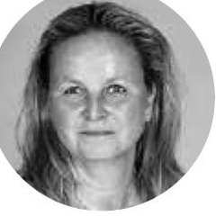 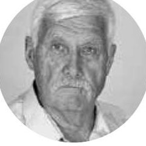 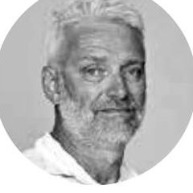 |
|
| Sdružení ODS a nezávislých kandidátů | ||
| SNK Pečky Pečákům | MJMPMMLHDŘRPŠJPSAHAČTCJHKVPŠTJJDMŠJKASMČMH |
|
| Lidé pro Pečky s podporou SPD | LTJVLMVSMVTRAŠJRJVPKTMIVJKJVLKRHJŠJVMCLMJK |
|
| ČSSD a sjednocená levice | PDLKIPVKLKLSVZRVTMJUJDPJJZRHLVAUZPMMMVPSLU |
— |
| Lidovci a nezávislí | PZJBMHPKZZJNEMPKSTLSJSHTAMJHPŠMKEGVDBAMVVZ |
Kompletní kandidátní listiny (21 kandidátů na uskupení) podle ČSÚ / novinky.cz — u jmen bez fotografie je zobrazen barevný avatar s iniciálami, plné jméno se zobrazí po najetí myší. Fotografie se podařilo dohledat u obou kandidátek, které je zveřejnily ve volebním inzerátu v Pečeckých novinách 9/2022 — NAŠE PEČKY (str. 11, 21 z 21) a Sdružení ODS a nezávislých kandidátů (str. 9, 21 z 21). U zbylých čtyř uskupení (SNK Pečky Pečákům, Lidé pro Pečky s podporou SPD, ČSSD a sjednocená levice, Lidovci a nezávislí) jejich inzerce obsahovala jen jmenný seznam bez portrétních fotek — Lidovci přímo uvádí, že „nechtějí stavět politiku na líbivých fotkách“.
Volební programy - aneb co kdo sliboval
Shrnutí volebních programů z inzertních stran Pečeckých novin 9/2022 (vydání těsně před volbami), doplněno o oficiální kandidátku ODS. Plné znění viz odkaz u každého uskupení.
- Soběstačnost a rozvoj: úpravna vody, fotovoltaika a komunitní energetika, víc zeleně, územní plán jižní části města, parkování.
- Klíčové projekty: obchvat, tělocvična, opravy Tř. 5. května a chodníků, oživení náměstí, úprava hřbitova.
- Péče o občany: jesle, obecní bydlení, veřejné WC, modernizace zdravotního střediska, bezbariérová podatelna, sobotní úřední hodiny, bezpečnost.
- Vzdělání, kultura, sport: přístavba ZŠ, fotbalové kabiny, rekonstrukce kulturního domu, knihovna, diskgolf a pumptrack.
Nezveřejnilo jednotný bodový program — inzerce ukazuje portréty kandidátů s krátkými hesly, mj. k těmto tématům:
- Investice do provozu města
- Bezpečnost
- Podpora sportu
- Vzdělávání dětí
Text hesel je z fotomozaiky strojově málo čitelný, ověřitelný jen z originálu PDF.
Zdroj: Pečecké noviny 9/2022, PDF str. 9 ↗ · kandidátka na ods.cz ↗
- Pokračování jednání o obchvatu města
- Řešení parkování
- Výstavba obecních nebo družstevních bytů
- Podpora podnikání a drobných podnikatelů
- Řešení obslužnosti Velkých Chvalovic
- Navýšení stavu městské policie
- Podpora rozšíření zdravotní péče
- Ochrana vodního zdroje
- Dostavba a modernizace ZŠ a MŠ
- Podpora sportovních oddílů a odpočinkových míst
- Oprava jedné ulice v každé části města ročně
- Zdravotní a sociální: nový pečovatelský dům s hospicem, bezbariérovost, rehabilitační centrum s bazénem, rozšíření ordinací specialistů.
- Sport a vzdělávání: revitalizace myslivny a bažantnice, myslivecký kroužek, obnova Skautu/Junáka/Sokola, „kopečkové hřiště".
- Bezpečnost: městská policie 24/7, nové přechody.
- Životní prostředí: ochrana dřevin, remízky, nechemická likvidace plevele.
- Rozvoj města: revitalizace jižní části, oprava fontány, obnova pramene Poděbradky, nové bytové jednotky, úprava Barákovy a Třebízského ulice, parkoviště u lékárny.
- Odpovědně provést město počínající ekonomickou krizí
- Hospodařit s prostředky města odpovědně
- Soustředit se na realizovatelné projekty
- Opravovat ulice a chodníky rovnoměrně — Pečky jih, sever i Velké Chvalovice
- Navázat na Strategický plán města
- Podporovat sport, kulturu a spolky
- Udržet zdravotní a sociální služby
- Podporovat místní podnikatele a nové bydlení
- Racionalizovat Pečecké služby
- Udržet letní tábor v Hryzelích
- Vybudovat veřejné WC
- Opravit hřbitov
- Nedopustit prodej vodovodu a kanalizace
- Podpora zájmových, kulturních a volnočasových spolků
- Opravy chodníků s bezbariérovými úpravami
- Lavičky, odpadkové koše a veřejné WC
- Obnova tradice pečeckého skautu
- Více míst ve školce, vznik městských jeslí
- Bezpečná a hlídaná dětská hřiště
- U-rampa, Street Workout hřiště a pumptrack
- Rozšíření obytných zón kvůli dopravní bezpečnosti
- Rozšíření otevírací doby pošty
- „Rozumné" dořešení obchvatu
- Péče o hřbitov včetně autobusové zastávky
Společná témata a shoda mezi uskupeními
Šest uskupení kandidovalo s odlišnými akcenty, ale řada bodů se v programech opakuje napříč politickým spektrem — od okrajových stran po vítěze i budoucí vedení radnice. Přehled ukazuje, kolik uskupení mělo dané téma ve svém programu.
| Téma | Kolik uskupení | Která |
|---|---|---|
| Sport a volný čas | 6 z 6 | úplně všechna uskupení |
| Bezpečnost a městská policie | 5 z 6 | všechna kromě ČSSD a sjednocené levice |
| Bydlení (obecní/družstevní byty) | 4 z 6 | NAŠE PEČKY, SNK Pečky Pečákům, Lidé pro Pečky SPD, ČSSD a sjednocená levice |
| Opravy chodníků a ulic | 4 z 6 | NAŠE PEČKY, SNK Pečky Pečákům, ČSSD a sjednocená levice, Lidovci a nezávislí |
| Zdravotní péče | 4 z 6 | NAŠE PEČKY, SNK Pečky Pečákům, Lidé pro Pečky SPD, ČSSD a sjednocená levice |
| Obchvat města | 3 z 6 | NAŠE PEČKY, SNK Pečky Pečákům, Lidovci a nezávislí |
| Veřejné WC | 3 z 6 | NAŠE PEČKY, ČSSD a sjednocená levice, Lidovci a nezávislí |
| Péče o hřbitov | 3 z 6 | NAŠE PEČKY, ČSSD a sjednocená levice, Lidovci a nezávislí |
| Parkování | 3 z 6 | NAŠE PEČKY, SNK Pečky Pečákům, Lidé pro Pečky SPD |
| Školky a jesle | 3 z 6 | NAŠE PEČKY, SNK Pečky Pečákům, Lidovci a nezávislí |
Výsledek - aneb jak to dopadlo
| Uskupení | Podíl | Mandátů | Výsledek |
|---|---|---|---|
| NAŠE PEČKY (STAN + nezávislí) | 30,29 % | 7 | opozice Vítěz voleb, nicméně skončili v opozici, nemají zastoupení v radě. |
| Sdružení ODS a nezávislých kandidátů | 27,67 % | 6 | koalice Uzavřeli koalici se SNK Pečky Pečákům a ČSSD a sjednocenou levicí a jsou ve vedení radnice. |
| SNK Pečky Pečákům | 16,18 % | 3 | koalice Uzavřeli koalici s ODS a NK a ČSSD a sjednocenou levicí a jsou ve vedení radnice. |
| Lidé pro Pečky s podporou SPD | 13,94 % | 3 | opozice Skončili v opozici, nemají zastoupení v radě. |
| ČSSD a sjednocená levice | 8,29 % | 2 | koalice Uzavřeli koalici s ODS a NK a SNK Pečky Pečákům a jsou ve vedení radnice. |
| Lidovci a nezávislí | 3,62 % | 0 | bez zastupitelstva Vůbec se nedostali do zastupitelstva. |
Ve volbách bylo zapsáno 3 669 voličů, z nichž 1 921 odevzdalo obálku s hlasy — volební účast tak dosáhla 52,36 %.
Povolební koalice: proč vítěz voleb není v radě
Volby 2022 s přehledem vyhrálo uskupení NAŠE PEČKY (30,29 % hlasů, 7 z 21 mandátů — viz sekce Výsledky voleb). Přesto nemá v sedmičlenné radě ani jedno křeslo. Vysvětlení není žádná anomálie ani chyba — je to důsledek toho, jak české obecní zřízení volbu vedení obce konstruuje.
| Volba | Pro | Proti | Zdržel se |
|---|---|---|---|
| Starosta — Milan Paluska | 13 | 6 | 2 |
| 1. místostarosta — Zdeněk Fejfar | 15 | 3 | 3 |
| 2. místostarosta — Martin Jedlička | 14 | 5 | 2 |
| Radní — Karel Krištoufek | 14 | 6 | 1 |
| Radní — Hana Kuprová | 16 | 2 | 3 |
| Radní — Ivana Trčková | 15 | 2 | 4 |
| Radní — Petr Dürr | 14 | 4 | 3 |
Historické srovnání: jak silná byla podpora starostů dřív
ČSÚ eviduje jen výsledky voleb (hlasy a mandáty stran), ne jmenovité hlasování zastupitelstva o starostovi — to je v zápisech z ustavujících zasedání, které má Pečky digitalizované v systému usneseni.cz až od dubna 2021. Pro roky 2014 a 2018 proto přesný poměr hlasů pro/proti/zdržel se nikde online nedohledáme; z dobového tisku se ale dá zjistit, jak silná byla povolební koalice.
| Rok | Starosta/ka | Uskupení | Síla koalice |
|---|---|---|---|
| 2014 | Milan Urban | ODS a nezávislí | 8 z 21 mandátů (vítěz voleb), k většině 11 potřeboval dalšího koaličního partnera — dobový tisk přesné složení neuvádí |
| 2018 | Alena Švejnohová | SNK Naše Pečky | 13 z 21 mandátů (SNK Naše Pečky 9 + Pečky Pečákům 2 + ČSSD 2) — podrobný rozbor na stránce Volby 2018 |
| 2022 | Milan Paluska | ODS a NK | 11 z 21 mandátů (ODS a NK 6 + SNK Pečky Pečákům 3 + ČSSD a sjednocená levice 2), volba starosty 13 pro / 6 proti / 2 se zdrželi |
Volební účast stoupá
Komunální volby mají v Česku dlouhodobě jednu z vyšších účastí ze všech typů voleb — mezi lety 2014 a 2022 se celostátní průměr pohyboval od 44,46 % do 47,34 %, výrazně nad senátními volbami (10–20 %) nebo volbami do Evropského parlamentu (18,2 % v roce 2014). Podle Wikipedie je hlavním důvodem to, že lidé v komunálních volbách často osobně znají kandidáty, o kterých rozhodují. V Pečkách navíc účast od roku 2014 soustavně roste a v posledních dvou volbách už znatelně převyšuje celostátní průměr.
| Rok | Účast v Pečkách | Průměr ČR |
|---|---|---|
| 2014 | 40,80 % | 44,46 % |
| 2018 | 48,81 % | 47,34 % |
| 2022 | 52,36 % | 46,07 % |
Komunální volby 9.–10. 10. 2026
Volby 2026 do zastupitelstva
Příští komunální volby v Pečkách se konají 9.–10. října 2026. Výsledky, kandidátní listiny a volební programy uskupení doplníme na tuto stránku, jakmile budou k dispozici — stejně jako u voleb 2022. sledujeme
Archiv jednání · usneseni.cz
Jednání a usnesení
Kompletní strojově čitelný archiv veřejných jednání rady a zastupitelstva města Pečky — pozvánky, zápisy a jednotlivá usnesení včetně výsledků hlasování, texty verbatim bez úprav. ověřeno
Načítám archiv…
Registr smluv · zákon 340/2015 Sb.
Smlouvy
Registr smluv eviduje smlouvy, které veřejné instituce uzavírají za peníze daňových poplatníků. Data pro skupinu Město Pečky sbírá a strukturuje Hlídač státu; níže je výřez získaný přes připojený konektor Hlídače státu. ověřeno
Nejnovější smlouvy
| Datum podpisu | Předmět | Protistrana | Částka |
|---|---|---|---|
| 23. 7. 2026 | Pečovatelská služba — dotace na sociální služby (Humanitární fond) | Středočeský kraj | 1 100 000 Kč |
| 23. 7. 2026 | Pečovatelská služba — dotace na sociální služby (Humanitární fond) | Středočeský kraj | 400 000 Kč |
| 22. 7. 2026 | Dar — zdravotnický batoh | Krajské ředitelství policie Středočeského kraje | 10 381 Kč |
| 15. 7. 2026 | Pečovatelská služba — dodatek č. 2, dofinancování sociální služby | Středočeský kraj | 670 600 Kč |
| 14. 7. 2026 | Smlouva o spolupráci — Digitální odysea 26/27 (Městská knihovna) | Sdružení knihoven ČR | bez ceny |
| 1. 6. 2026 | ZŠ Pečky — Fond prevence 2026, dotace | Středočeský kraj | 190 000 Kč |
| 12. 5. 2026 | Pečovatelská služba — dodatek k dotaci na sociální službu 2026 | Středočeský kraj | 6 902 700 Kč |
| 15. 4. 2026 | ZŠ Pečky — dotace na projekt rozvoje venkova | Státní zemědělský intervenční fond | 800 000 Kč |
Největší smlouvy v registru (celá skupina)
| Datum | Předmět | Protistrana | Částka |
|---|---|---|---|
| 4. 2. 2021 | Darování hasičského vozidla NA MB Atego | HZS Středočeského kraje | 9 322 779 Kč |
| 10. 9. 2024 | Podpora ze Státního fondu životního prostředí | SFŽP ČR | 8 605 336 Kč |
| 12. 5. 2026 | Pečovatelská služba — dodatek k dotaci na sociální službu | Středočeský kraj | 6 902 700 Kč |
| 20. 3. 2025 | Pečovatelská služba — dotace na sociální službu 2025 | Středočeský kraj | 6 294 100 Kč |
| 20. 3. 2023 | Pečovatelská služba — dotace na sociální službu 2023 | Středočeský kraj | 3 399 400 Kč |
| 16. 11. 2023 | Podpora ze Státního fondu životního prostředí | SFŽP | 2 719 775 Kč |
| 10. 6. 2021 | Bezúplatný převod motorového vozidla | HZS hl. m. Prahy | 2 344 834 Kč |
| 18. 11. 2025 | Věcné břemeno a umístění stavby | ČEZ Distribuce |
| 30. 12. 2022 | Dodatek č. 1 ke smlouvě o ubytování | Středočeský kraj |
| 3. 11. 2021 | Dodatek — rozdíl ceny bezpečnostního vybavení | HZS hl. m. Prahy |
| 12. 7. 2021 | Právní služby při založení družstva (společně s okolními obcemi) | Město Český Brod |
| Zdroj | Co obsahuje | |
|---|---|---|
| Hlídač státu — profil Města Pečky | plný přehled smluv, dotací, rizik a dodavatelů | otevřít ↗ |
| smlouvy.gov.cz — oficiální registr smluv | plné znění smluv se subjektem Město Pečky | otevřít ↗ |
Veřejné zakázky · zákon 134/2016 Sb.
Zakázky
Veřejná zakázka je výběrové řízení na dodavatele — fáze před podpisem samotné smlouvy (tu eviduje Registr smluv v sekci Smlouvy). Data pro Město Pečky sbírá a strukturuje Hlídač státu; níže je výřez z jejich veřejně přístupného vyhledávání zakázek. ověřeno
Nejnovější zakázky (2025–2026)
| Poslední změna | Název | Cena |
|---|---|---|
| 10. 6. 2026 | Dostavba učeben a tělocvičny v ZŠ Pečky | 168 614 851 Kč |
| 6. 8. 2026 | Rekonstrukce místních komunikací a vodovodní řad v… | 32 425 117 Kč |
| 9. 6. 2026 | Rekonstrukce místních komunikací a vodovodní řad v… | 23 213 648 Kč |
| 9. 6. 2026 | Pečky – rekonstrukce ul. Prokopa Holého a… | 5 557 425 Kč |
| 9. 6. 2026 | Pečky – kalolis ČOV – modernizace | 3 279 909 Kč |
| 18. 6. 2026 | Zeleň, záhony v intravilánu města Pečky – M. Alše a… | 1 030 924 Kč |
| 10. 6. 2026 | Projektová příprava akcí souvisejících s… | 1 270 856 Kč |
| 18. 6. 2026 | Obnova dětského hřiště Sídliště | neuvedena |
Největší zakázky ve výřezu
| Cena | Název | Poslední změna |
|---|---|---|
| 168 614 851 Kč | Dostavba učeben a tělocvičny v ZŠ Pečky | 10. 6. 2026 |
| 32 425 117 Kč | Rekonstrukce místních komunikací a vodovodní řad v… | 6. 8. 2026 |
| 23 213 648 Kč | Rekonstrukce místních komunikací a vodovodní řad v… | 9. 6. 2026 |
| 13 438 402 Kč (odhad) | Rekonstrukce komunikací ul. M. Alše, části ul. K.… | 29. 9. 2024 |
| 8 900 000 Kč (odhad) | Domov pro každého — modulární domy pro Město Pečky | 12. 9. 2022 |
| 8 728 840 Kč | Intenzifikace ČOV Pečky | 20. 6. 2022 |
| 6 290 000 Kč | Revitalizace a obnova rybníku Benešák v Pečkách | 9. 11. 2023 |
| Zdroj | Co obsahuje | |
|---|---|---|
| Hlídač veřejných zakázek — Město Pečky | vyhledávání všech zakázek dle IČO 00239607 | otevřít ↗ |
| Věstník veřejných zakázek | oficiální celostátní evidence zadávacích řízení | otevřít ↗ |
Rozpočet a hospodaření · Monitor Státní pokladny (MF ČR)
Pokladna
Stručně: Pečky poslední čtyři roky hospodaří s přebytkem — skutečné příjmy pravidelně převyšují skutečné výdaje, i když se schválený rozpočet plánuje jako schodkový. Město nemá žádný úvěr ani dluhovou službu. Vedle běžného provozu (platy, služby, transfery) jde významná část peněz do investic — zejména do vodohospodářské infrastruktury, veřejného osvětlení a hasičů — často s vysokým podílem státních a evropských dotací. ověřeno
město nemá žádný úvěr
2023–2026 (viz níže)
34 % celého rozpočtu
dohledáno od r. 2020
Na co město utrácí (rok 2025, celkem 155,55 mil. Kč)
z toho 66 % (103,37 mil. Kč) běžný provoz, 34 % (52,18 mil. Kč) investice
| Kategorie | Částka | Podíl | |||||||||||||||||
|---|---|---|---|---|---|---|---|---|---|---|---|---|---|---|---|---|---|---|---|
| + | Platy a související výdaje | 24,38 mil. Kč | 16 % | ||||||||||||||||
| |||||||||||||||||||
| + | Nákup služeb | 26,36 mil. Kč | 17 % | ||||||||||||||||
| |||||||||||||||||||
| + | Transfery veřejnoprávním subjektům a platby daní | 39,97 mil. Kč | 26 % | ||||||||||||||||
| |||||||||||||||||||
| + | Ostatní běžné výdaje | 12,66 mil. Kč | 8 % | ||||||||||||||||
| |||||||||||||||||||
| + | Kapitálové (investiční) výdaje | 52,18 mil. Kč | 33 % | ||||||||||||||||
| |||||||||||||||||||
Bankovní účty
Čísla účtů nikde souhrnně publikovaná nejsou — dohledal jsem je z bankovních výpisů citovaných ve zprávě nezávislého auditora k hospodaření města za rok 2025. Město vede celkem 9 účtů u 5 bank. ověřeno
| Účet | Banka | Účel |
|---|---|---|
| 94-3222151/0710 | Česká národní banka | povinný účet u ČNB |
| 1621191/0100 | Komerční banka | výdajový |
| 19-1621191/0100 | Komerční banka | příjmový |
| 6015-1621191/0100 | Komerční banka | depozitní |
| 51-5652460267/0100 | Komerční banka | sociální fond |
| 131-3838110207/0100 | Komerční banka | spořicí |
| 981224-504328309/0800 | Česká spořitelna | Fond rozvoje bydlení |
| 1387949441/2700 | UniCredit Bank | termínovaný vklad |
| 5639644029/5500 | Raiffeisenbank | běžný |
| Zdroj | Co obsahuje | |
|---|---|---|
| Monitor Státní pokladny — přehled obce Pečky | plnění rozpočtu, struktura výdajů, časové řady, dluhová služba | otevřít ↗ |
| Monitor — časové řady obce Pečky | víceletý vývoj příjmů, výdajů, dluhu a stavu na účtech | otevřít ↗ |
| Monitor — datový katalog Open Data | strojově čitelná data (JSON-LD/CSV/XML) ke stažení | otevřít ↗ |
| Hlídač státu — Registr dotací | úplný seznam přijatých dotací se zdroji a odkazy na detail | otevřít ↗ |
| Zpráva o výsledku přezkoumání hospodaření 2025 | seznam bankovních účtů podle výpisů kontrolovaných auditorem | otevřít ↗ |
| Fondy 2025 (příloha Závěrečného účtu) | zůstatky jednotlivých fondů města | otevřít ↗ |
| Rekapitulace 2025 (příloha Závěrečného účtu) | souhrnný zůstatek na účtech, vkladech a v pokladně | otevřít ↗ |
Měsíčník města
Pečecké noviny
Co je psáno, to je dáno. Černé na bílém.
Ponořte se do archivu a užijte si fulltextové vyhledávání
Text vyextrahovaný ze všech vydání, hledá se bez ohledu na diakritiku a velikost písmen, napříč jednotlivými stránkami.
Načítám archiv textu…
2026
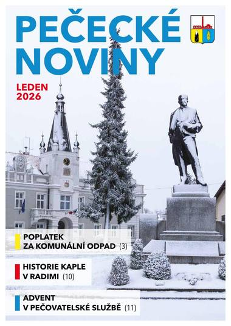
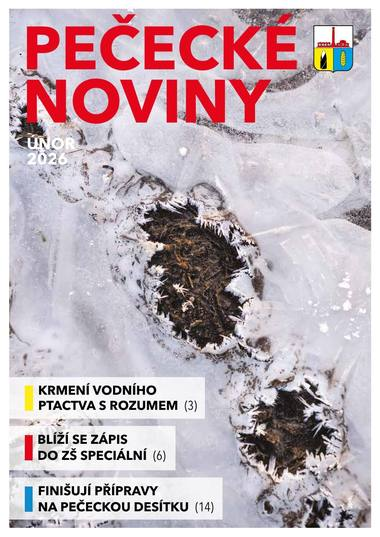
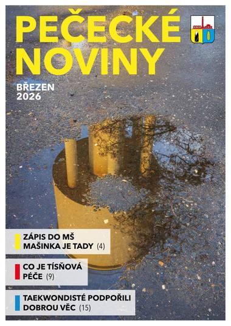


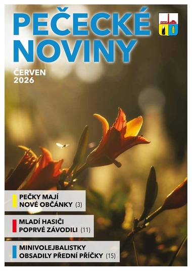

2025
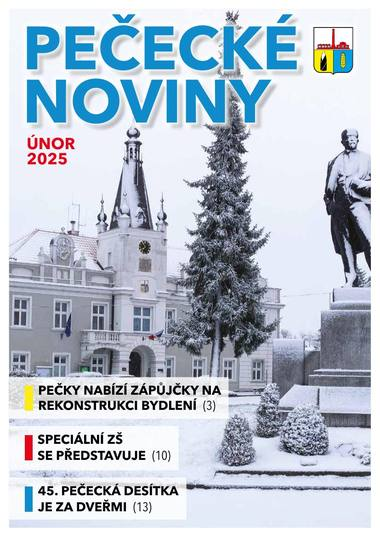
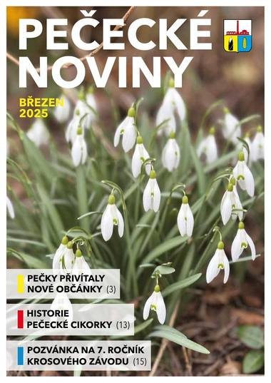

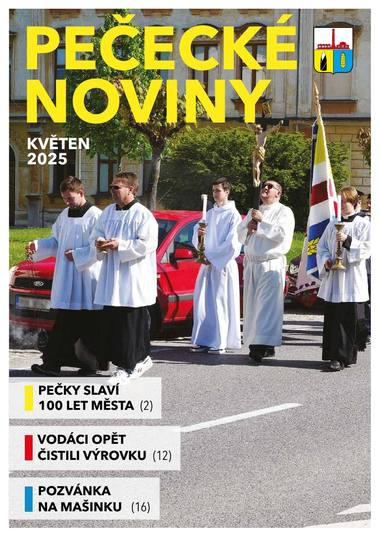


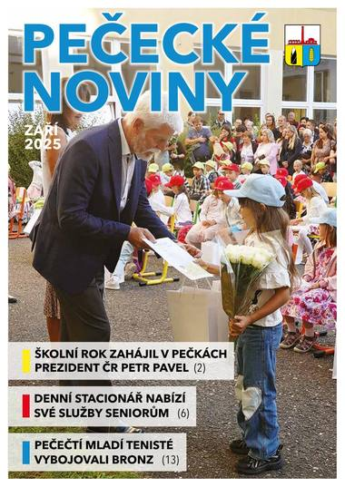

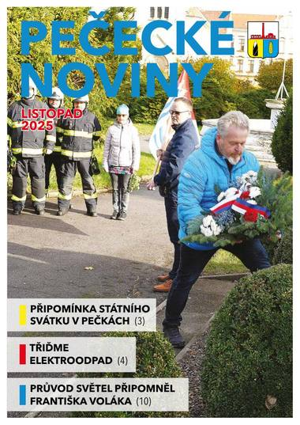

2024
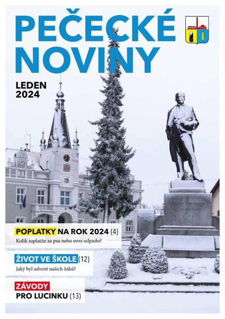
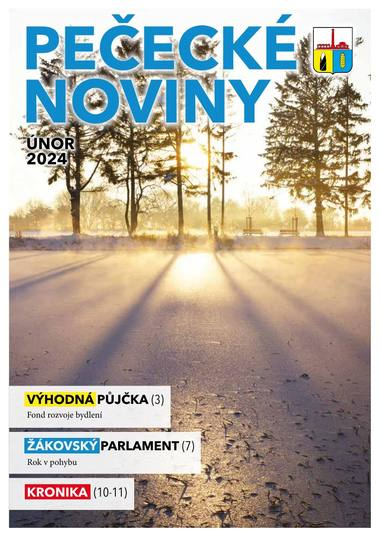

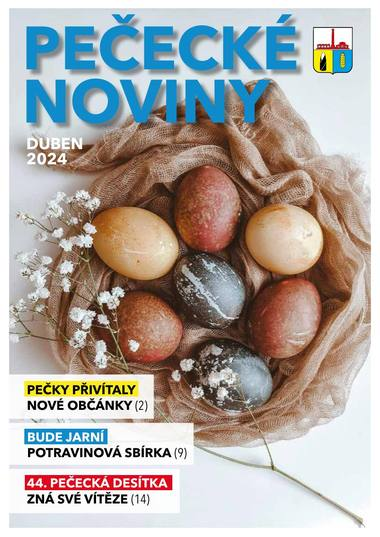

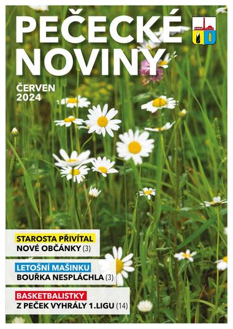

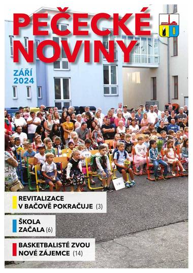

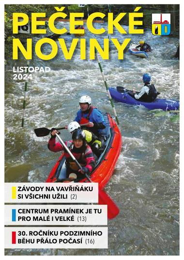
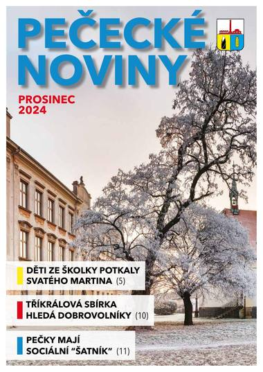
2023

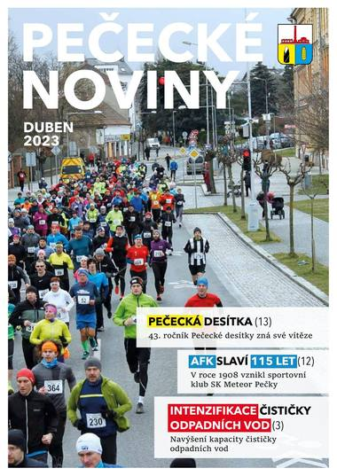

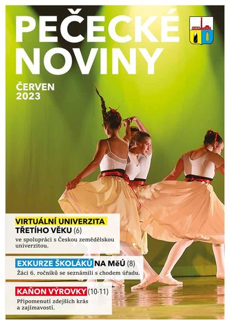

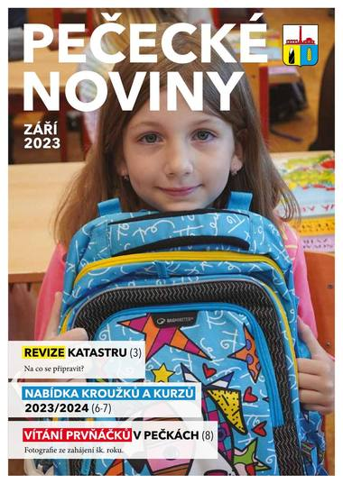
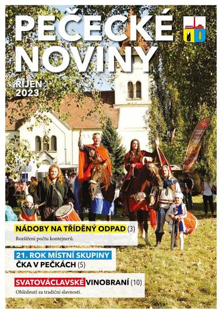
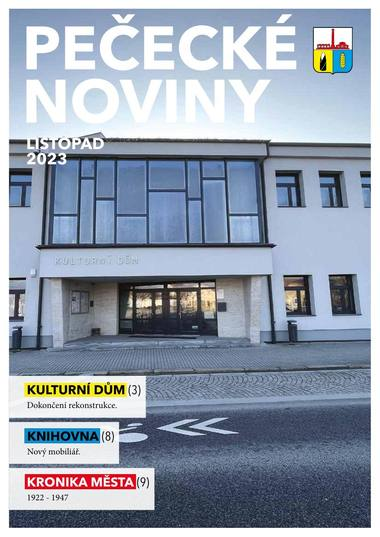

2022

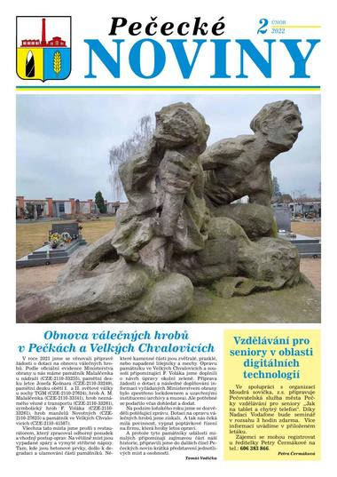
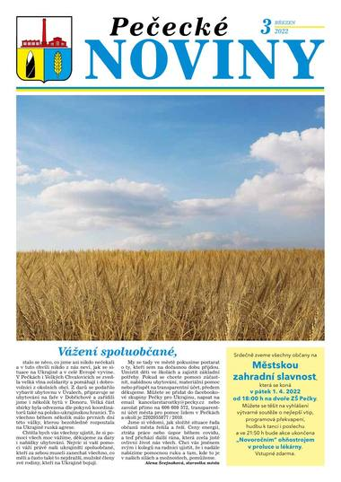


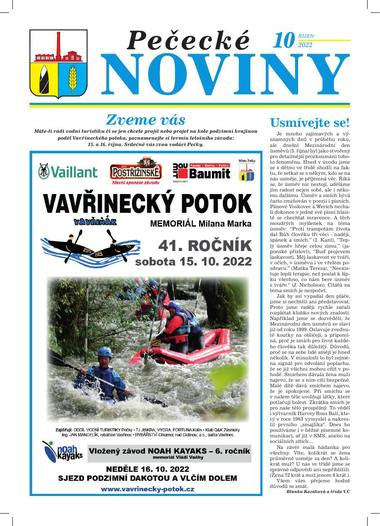
2021


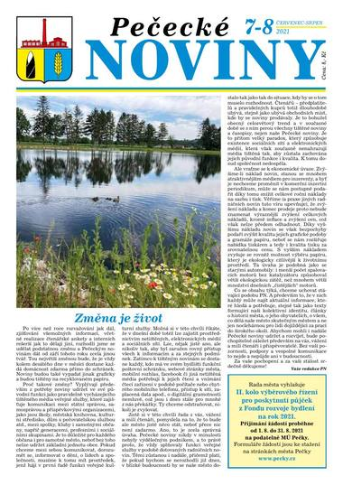


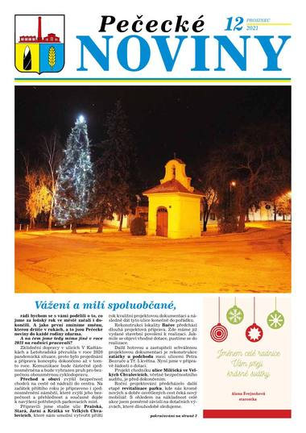
2020


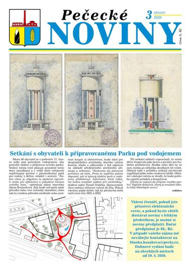


Starší ročníky (lokální archiv)
Starší ročníky nejsou v aktuálním online archivu pecky.cz dostupné (rozcestník i dřívější přímé odkazy vrací 404) — čísla níže pochází z lokálně dochovaných kopií, které web doplnil ručně. Chybí celé roky 2012–2015 a leden 2016 (zatím nedohledáno), srpen 2019, 2/2011 a 3/2011 (ve zdrojové kopii je pod únorem duplicitně uložené lednové číslo, ne skutečné vydání), 10/2009 a 11–12/2010; 9/2010 je dochované jen jako neúplný 4stránkový výřez bez titulní strany. přiznaná mezera
pecky-noviny/Data/, ne na pecky.cz.
2019
2018
2017
2016
2011
2010
2009
2008
Pečecké noviny jsou informační měsíčník města — vychází měsíčně (mimo prázdninové dvojčíslo červenec–srpen) v nákladu cca 1 000 kusů, redakci vede Alena Brantová (noviny@pecky.cz). Archiv 2008–2026, 156 vydání (68 zrcadleno z pecky.cz, 88 z lokálního archivu 2008–2011 a 2016–2019). ověřeno
Přehled mezer v archivu
Souhrn všech chybějících čísel napříč celým archivem 2008–2026, seřazeno podle ročníku. Ročníky, které tu nejsou uvedené, jsou kompletní.
- 2012–2015: celé čtyři ročníky chybí — nedohledány ani v online archivu pecky.cz, ani v žádné poskytnuté lokální kopii
- 2009: říjen
- 2010: listopad, prosinec
- 2011: únor, březen
- 2016: leden
- 2019: srpen
- 2020: srpen
- 2022: listopad, prosinec
- 2023: leden, únor
- 2025: leden
Rok 2026 průběžně pokračuje (zatím vydáno do čísla červenec–srpen) — chybějící pozdější měsíce nejsou mezera, ještě nevyšly.
Transparentnost dat
O webu
pecky.online je neoficiální, nezávislý občanský projekt. Cílem je zpřehlednit veřejně dostupné informace o samosprávě města Pečky.
Odkazy
Oficiální kanály města a související otevřená data.
 YouTube kanál@mestopecky ↗
Profil na Hlídači státuIČO 00239607 ↗
Zápisy a usnesení ZM/RMusneseni.cz ↗
Facebook — Kulturní středisko/kspecky ↗
Registr smluvsmlouvy.gov.cz ↗
Hlídač veřejných zakázekhlidacstatu.cz ↗
Otevřená data voleb (ČSÚ)volby.gov.cz ↗
Pečecké služby s.r.o.pececkesluzby.cz ↗
Vzdělávací centrum Pečkyvzcentrum.cz ↗
Městská knihovna Svatopluka Čechapececko.cz ↗
Facebook — knihovna/knihovnapecky ↗
Územní plán (Národní geoportál)geoportal.gov.cz ↗
ČSÚ — Veřejná databáze (MOS)vdb.czso.cz ↗
Justice.cz — sbírka listinor.justice.cz ↗
YouTube kanál@mestopecky ↗
Profil na Hlídači státuIČO 00239607 ↗
Zápisy a usnesení ZM/RMusneseni.cz ↗
Facebook — Kulturní středisko/kspecky ↗
Registr smluvsmlouvy.gov.cz ↗
Hlídač veřejných zakázekhlidacstatu.cz ↗
Otevřená data voleb (ČSÚ)volby.gov.cz ↗
Pečecké služby s.r.o.pececkesluzby.cz ↗
Vzdělávací centrum Pečkyvzcentrum.cz ↗
Městská knihovna Svatopluka Čechapececko.cz ↗
Facebook — knihovna/knihovnapecky ↗
Územní plán (Národní geoportál)geoportal.gov.cz ↗
ČSÚ — Veřejná databáze (MOS)vdb.czso.cz ↗
Justice.cz — sbírka listinor.justice.cz ↗
Uskupení a politici na sociálních sítích
Nezávislé, veřejně dostupné účty jednotlivých uskupení, zastupitelů a dalších místních sociálních sítí — nejde o oficiální kanály města ani o profily spravované tímto webem. Počty sledujících jsou orientační snímek k 18. 8. 2026 (u Facebooku po zaokrouhlení, jak je zobrazuje samotná platforma), časem se mění. ověřeno
Další nezávislé zdroje
Soukromé/komunitní projekty o Pečkách — nespravované městem ani tímto webem.
Zdroje a stav sekcí
| Sekce | Zdroj | Stav |
|---|---|---|
| Základní fakta o městě | Wikipedie, oficiální web města | ověřeno |
| Výsledky voleb 2018 | ČSÚ — otevřená data (volby.gov.cz), křížově ověřeno s Pečeckými novinami 11/2018 | ověřeno |
| Kandidátky a volební programy 2018 | Novinky.cz (kandidátní listiny), Pečecké noviny 9/2018 (inzerce, u ODS přepis z obrazu) | ověřeno |
| Povolební vývoj 2018 (koalice, napadení voleb) | Pečecké noviny 11–12/2018 | ověřeno |
| Výsledky voleb 2022 | ČSÚ — otevřená data (volby.gov.cz), křížově ověřeno se Seznam Zprávy | ověřeno |
| Volební programy 2022 | Pečecké noviny 9/2022 (inzerce), u 2 uskupení přepis OCR | ověřeno |
| Fulltext v Pečeckých novinách | 156 PDF 2008–2026 (68 pecky.cz + 88 lokální archiv 2008–2011 a 2016–2019), text extrahován (pdftotext) | ověřeno |
| Jmenný seznam zastupitelstva (na stránce Lidé) | pecky.cz — Složení ZM (21/21 členů) | ověřeno |
| Fotografie zastupitelů (13/21) | ods.cz — oficiální kandidátka (6), Pečecké noviny 9/2022 — inzerce NAŠE PEČKY (7) | ověřeno |
| Složení rady (7 členů) a povolební koalice | usnesení ustavujícího zasedání ZM 7/2022, mesto-pecky.usneseni.cz | ověřeno |
| Plán — strategický plán rozvoje 2016–2026 | pecky.cz — souhrn Strategického plánu rozvoje města Pečky 2016–2026 (PDF) | ověřeno |
| Jednání a usnesení | mesto-pecky.usneseni.cz (export 281 jednání / 2 731 usnesení) | ověřeno |
| Smlouvy | Hlídač státu (konektor, statický výřez: 180 smluv / 102,4 mil. Kč, skupina celkem) | ověřeno |
| Zakázky | Hlídač veřejných zakázek (statický výřez: 193 zakázek nalezeno pro IČO 00239607) | ověřeno |
| Pokladna — rozpočet, hospodaření a bankovní účty | Monitor Státní pokladny (MF ČR), Hlídač státu — Registr dotací (148 dotací nalezeno), Závěrečný účet 2025 + auditorská zpráva (pecky.cz) | ověřeno |
| Žádosti dle zákona 106/1999 Sb. | pecky.as4u.cz — výroční zprávy o poskytování informací 2011–2024 a jednotlivé žádosti i odpovědi v PDF | zdroj nalezen, nezpracováno |
| Pečecké noviny | pecky.cz — archiv PDF zpravodaje (68/68 vydání, 2020–2026); doplněno lokálním archivem redakce (43 vydání, 2008–2011, nedostupné na pecky.cz — viz mezery v panelu Zpravodaj) | ověřeno |